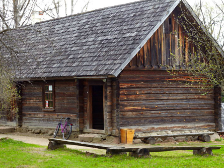
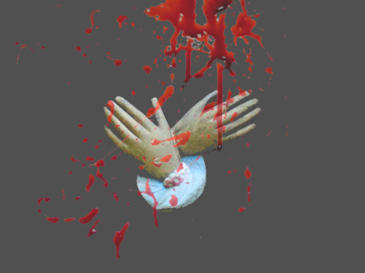

Аглядная экскурсія "Мінск.Лепшае"
Гэта вела-вандроўка па самых прыгожых, найбольш цікавых і яркіх мясцінах Мінска. Знакамітыя помнікі, людзі і легенды горада - у адным туры. Вас сустрэне эклектычны горад, у якім адначасова ўзносяцца ў неба шпілі старога горада і шкляныя офісныя высоткі...(апісанне, кошты, умовы)
Мінск графа Чапскага
Гэта вандроўка па мясцінах, звязаных з легендарным мінчуком, чыноўнікам і бізнэсмэнам, закаханым у Мінск, дзякуючы якому гэты горад, які доўгі час быў глухой правінцыяй, стаў набываць сталічны глянец і бляск...
(апісанне, кошты, умовы)
Мінскія хіпаны
Гэта экскурс у разняволена-валасатыя шасцідзесятыя і семідзесятыя, калі тутэйшая моладзь, пачуўшы на замежных радыёхвалях, што глушыліся спецслужбамі, музыку новага пакалення, вырашыла стварыць тут свае "Бітлз" і "Ролінг стоўнз"...
(апісанне, кошты, умовы)

Таямніцы Лошыцкага парка
Гэтыя старыя алеі схаваліся ад горада на самым ускрайку: былы маёнтак Прушынскіх, бліскучая сядзіба графа Любанскага і месца загадкавай гібелі яго жонкі, сцежкі шпацыраў паэтаў ды мастакаў, школа НКУС, нацысцкі штаб, навуковая база генетыка М.Вавілава - асцярожней, машына часу рызыкуе даць збой!...
(апісанне, кошты, умовы)

Мінскія паўбагі: велазнаёмства з манументальнай скульптурай сталічных дахаў
Яны амаль кранаюцца неба, але ў той жа час цвёрда стаяць нагамі на дахах. Горад узнёс іх туды, прызначыў быць пасярэднікамі. Аўтарская велаэкскурсія-знаёмства з мінскімі небажыхарамі - падрыхтуйцеся высока трымаць галаву!..
(апісанне, кошты, умовы)
Мінск габрэйскі
Ужо ў XV ст. у Менску загучала юдэйская малітва. Яўрэйская грамада, даволі добра ладзячы з тутэйшым насельніцтвам, пасля ўказу аб рысе аседласці стала адной з самых вялікіх у Расійскай Імперыі. У ХХ ст. ідыш ужо паўсюдна гучаў на гарадскіх рынках, у школах, універсітэце і нават з дзяржаўных шыльдаў. І толькі Катастрофа 1940-х...
(апісанне, кошты, умовы)

Сны і будні Трактарагорада: пешы шпацыр па жылым пасёлку Мінскага Трактарнага Завода
Вялікая гісторыя ўзорнага сацыялістычнага пасёлка пераплялася з маленькімі гісторыямі яго будаўнікоў і жыхароў, каб стаць цэльнай Аповесцю - з эфектам "сепія", з тэгам "трэш", з саўндтрэкам у стылі "рэтра". Пабудаваны першым у пасляваенным Мінску палоннымі немцамі і вяскоўцамі-беларусамі, пасёлак стаў сімвалам эпохі...
(апісанне, кошты, умовы)
ЗАГАРАДНЫЯ МАРШРУТЫ:

Заслаўе - Ратамка - Мінскае мора
(загарадны маршрут, 9 гадзін, 42 км.)
Пагрузіцца ў захапляльны вір беларускай гісторыі, пагойсаць на роварах па лясных сцежках, пакатацца на конях, а магчыма - і паплаваць у Мінскім моры - што можа быць лепш? Заслаўе – залатая класіка беларускага турызму, падручнік па гісторыі Беларусі ад "А" да "Я", разгорнуты ў маляўнічай прасторы...
(апісанне, кошты, умовы)

Дакрануцца да каранёў
(загарадны маршрут, 8 гадзін, 37 км.)
Хто вам сказаў, што сучасны Мінск стаіць на тым месцы, дзе і быў заснаваны? І што гэта за старажытнае гарадзішча ўзвышаецца непадалёк ад сучаснага мегаполіса?.. Апроч земляной крэпасці на рацэ Менка мы таксама пабываем у знакамітым музеі-скансэне, дзе на маляўнічых берагах р. Пціч сабраны самыя цікавыя ўзоры традыцыйнай архітэктуры беларусаў. Толькі аўтэнтыка!..
(апісанне, кошты, умовы)

Гравітацыя must die
(загарадны маршрут, 8 гадзін, 42 км.)
Угару і долу, угару і зноў долу! да касмічных вышыняў і стрэмгалоў да лугавых далінаў! Гэта падарожжа па "алімпійскай" загараднай веласцежцы'1980, па леса-палявых сцежках і па камфартабельным велагасцінцы самага "роварнага" раёна Мінска, паміж якімі - вузлавыя пункты турбапаскарэння: музей авіяцыйнай тэхнікі і алімпійскі лыжны цэнтр у Раўбічах з яго знакамітымі спускамі ды пад'ёмамі, а таксама музеем беларускага традыцыйнага мастацтва...
(апісанне, кошты, умовы)

ВЕЛА1812 альбо Сёмая хуткасць Напалеона
(загарадны маршрут, 12 гадзін, 60 км.)
Барысаў - Старабарысаў - Студзёнка - Брылеўскае поле
А што калі б у Напалеона быў ровар?.. Прапануем адважным велааматарам акунуцца ў атмасферу падзей халоднага лістапада 1812 г. і праехаць па слядах эпахальных бітваў на Бярэзіне....
апісанне экскурсіі знаходзіцца ў распрацоўцы - калі ласка, скантактуйцеся з намі, каб даведацца пра ўмовы і кошты

Мінскія прадмесці: Каралішчавічы
(загарадны маршрут, 4 гадзіны, 20 км.)
Велавандроўка ў маляўнічую вёску Каралішчавічы, што знаходзіцца на высокіх берагах Свіслачы пад Мінскам, і захоўвае памяць пра айчынную шляхецкую культуру, паэзію і кулінарыю. У маршрут таксама ўваходзіць мемарыял "Малы Трасцянец" і могілкі вежавых кранаў...
апісанне экскурсіі знаходзіцца ў распрацоўцы - калі ласка, скантактуйцеся з намі, каб даведацца пра ўмовы і кошты
Смакі, гукі й колеры Айчыны: па краі ганчароў, кулінараў, князёў ды кампазітараў
(2-дзённы загарадны маршрут з начоўкай на аграсядзібе)
Заслаўе - Гарадок - Крэва/ Залессе
апісанне экскурсіі знаходзіцца ў распрацоўцы - калі ласка, скантактуйцеся з намі, каб даведацца пра ўмовы і кошты

(загарадны маршрут)
апісанне экскурсіі знаходзіцца ў распрацоўцы - калі ласка, скантактуйцеся з намі, каб даведацца пра ўмовы і кошты
Беларуская пастараль: Вязынка - Дубрава - Радашковічы
(загарадны маршрут)
апісанне экскурсіі знаходзіцца ў распрацоўцы - калі ласка, скантактуйцеся з намі, каб даведацца пра ўмовы і кошты

(загарадны маршрут, 4 гадзіны, 20 км.)
Благаўшчына-Шашкоўка-Трасцянец
Асвенцым, Трэблінка, Курапаты - вядомыя месцы смутку. Трасцянец - буйная фабрыка смерці 1930-40-х гадоў еўрапейскага масштабу, пра якую амаль забылі. Сёння можна пабачыць шматлікія мемарыялы на месцы масавага знішчэння людзей - велічныя афіцыйныя і нефармальныя помнікі-"крыкі" блізкіх аб сваёй страце. Тут абарваліся жыццёвыя сцежкі безлічы людзей, якія прабіваліся да лепшай долі, але знайшлі - "Шлях у вечнасць"...
апісанне экскурсіі знаходзіцца ў распрацоўцы - калі ласка, скантактуйцеся з намі, каб даведацца пра ўмовы і кошты
Шлях у вечнасць: памятные мясціны гуманітарных катастрофаў 1930-40-х гг.
(загарадны маршрут, 4 гадзіны, 20 км.)
Благаўшчына-Шашкоўка-Трасцянец
Асвенцым, Трэблінка, Курапаты - вядомыя месцы смутку. Трасцянец - буйная фабрыка смерці 1930-40-х гадоў еўрапейскага масштабу, пра якую амаль забылі. Сёння можна пабачыць шматлікія мемарыялы на месцы масавага знішчэння людзей - велічныя афіцыйныя і нефармальныя помнікі-"крыкі" блізкіх аб сваёй страце. Тут абарваліся жыццёвыя сцежкі безлічы людзей, якія прабіваліся да лепшай долі, але знайшлі - "Шлях у вечнасць"...
апісанне экскурсіі знаходзіцца ў распрацоўцы - калі ласка, скантактуйцеся з намі, каб даведацца пра ўмовы і кошты
ЭКСКЛЮЗІЎ:

Легенды і міфы мінскіх нефармалаў: па слядах "Беларускага клімата"
"Аднаму мінскаму мастаку была зроблена пункцыя галаўнога мозга, у якім быў знойдзены старажытны трактат, дзе сцвярджалася, што сем кананічных і адзіннаццаць некананічных цудаў свету знаходзяцца ў Менску..." "Гонкі" пра горад, якія "гналі" адзін адному ўдзельнікі арт-суполкі “Беларускі клімат” падчас вандровак па горадзе, з цягам часу склаліся ў цэльны сюрэалістычны маршрут...
апісанне экскурсіі знаходзіцца ў распрацоўцы - калі ласка, скантактуйцеся з намі, каб даведацца пра ўмовы і кошты

Мінск экуменічны: богашукальніцкія велапрыгоды
Гасподзь, Пан, Алах, Яхвэ, Крышна, Ісус - каму яшчэ мінчукі дасылалі сігналы, углядаючыся ў неба і спрабуючы выйсці за межы сваёй штодзённасці? Экскурсія па мінскіх храмах розных рэлігій...
апісанне экскурсіі знаходзіцца ў распрацоўцы - калі ласка, скантактуйцеся з намі, каб даведацца пра ўмовы і кошты

Зімовая казка Лошыцы: лыжная экскурсія
...А пакуль хтосьці ные пра холад і адсутнасць сонца, мы здабываем здаровую чырвань на шчокі, грэемся жвавымі рухамі, цешымся прыгажосцю зімовага парка і слухаем старадаўнія лошыцкія гісторыі!...
апісанне экскурсіі знаходзіцца ў распрацоўцы - калі ласка, скантактуйцеся з намі, каб даведацца пра ўмовы і кошты